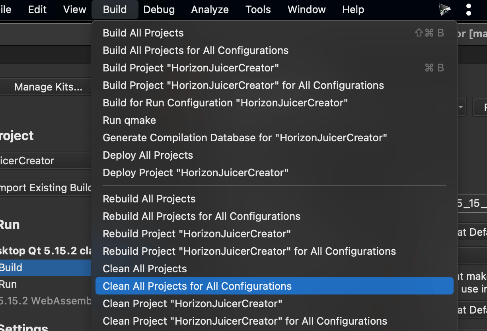

这篇文章上次修改于 449 天前，可能其部分内容已经发生变化，如有疑问可询问作者。
今天打开一个 QT 项目后进行编译发现报错了，查看了下什么都没有修改就比较奇怪了。根据日志是 boost 库出了问题，报错为：Undefined symbols for architecture x86_64，但是 boost 库是以前编译好的从来没动过。回想起来前几天重新安装了下 command line tool 会不会有关系。
看了下 QT kit 配置里面发现 clang 的设置居然有叹号。重新识别了下系统编译器：
然后重建下项目配置：

重新编译项目依然有报错。
最后就是 boost 库的确有问题了。于是我重新编译了一次。居然问题就解决了。
原来真的是由于系统的 Clang 更新后原来编译的 boost 库不兼容了，在此使用当前系统的 Clang 编译一次就行了。
boost 库编译方法参考：https://blog.niekun.net/archives/1174.html
没有评论